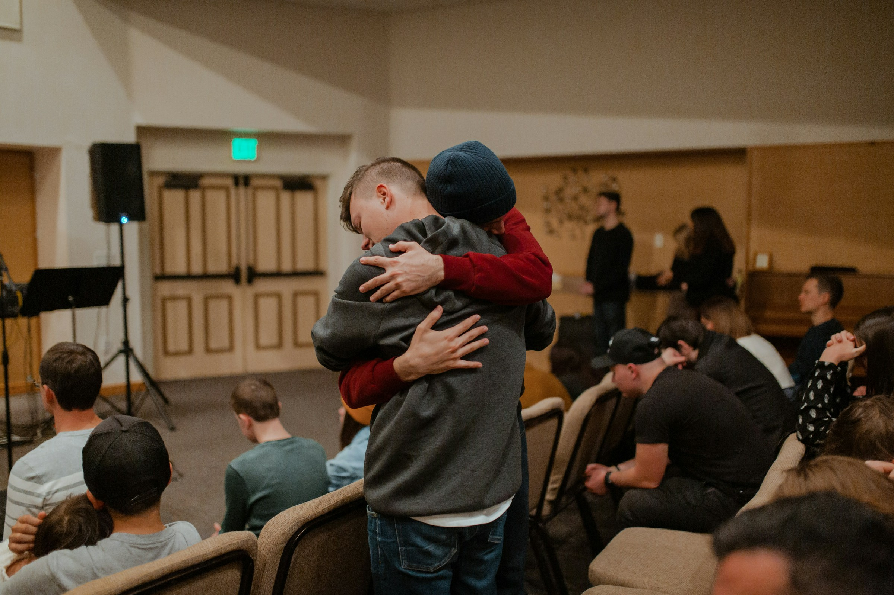
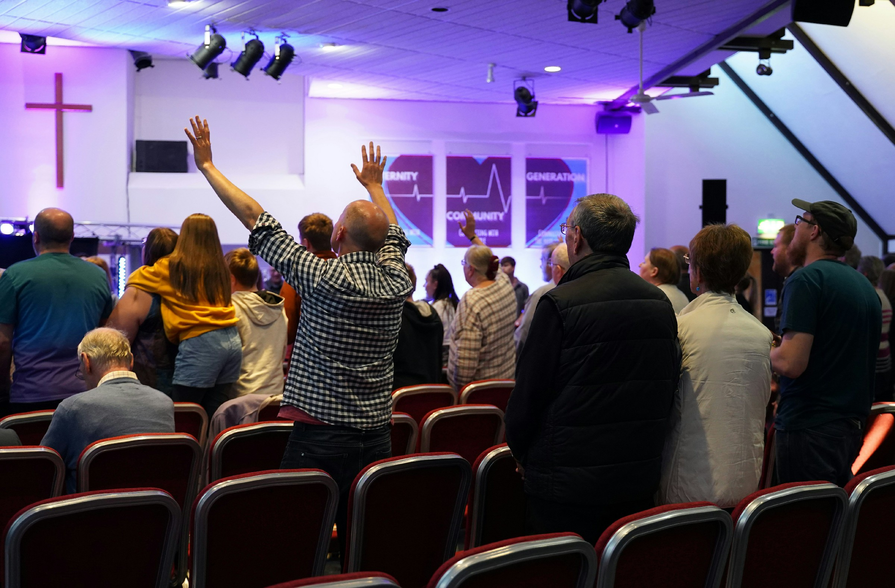

Witnessing
Propagating the gospel of our Lord Jesus Christ through preaching.
Matthew 28:18–20A Bible-believing church, a home for worship, and a community growing in the knowledge and power of God.
Get to know us
One church family, growing togetherJesus Christ Anointed Church, also known as JCAC Barrie, is a place of worship for everyone to have a personal divine encounter with the Holy Spirit of God.
We help people take their next step with Jesus Christ as Lord and Saviour and grow in the knowledge and power of God. We also advance the gospel by every available means, within our community and around the world.
Join us for a serviceWe are committed to sharing the gospel and building a life of faith through four practices.
Propagating the gospel of our Lord Jesus Christ through preaching.
Matthew 28:18–20Teaching the undiluted Word of God.
2 Timothy 4:2Worshipping and praising God in the beauty of His holiness.
John 4:24Praying in faith and trusting Jesus to answer.
John 14:14Our faith is grounded in the Bible and centered on Jesus Christ.
There is one God, revealed as Father, through His Son in redemption, and as the Holy Spirit. Jesus Christ is God manifested in flesh, both God and man.
Deuteronomy 6:4 · Ephesians 4:4–6 · Colossians 2:9 · 1 Timothy 3:16The Bible is the infallible Word of God and the authority for salvation and Christian living.
2 Timothy 3:15–17The Holy Spirit is our Helper and Comforter. We believe in the Spirit’s baptism, with its initial sign of speaking in tongues, and in the Spirit’s fruit and gifts.
John 14:16, 26All have sinned and need salvation. We are saved by grace through faith, through the atoning sacrifice of Jesus Christ.
Romans 3:23–25; 6:23 · Ephesians 2:8–9Jesus died for our sins, was buried, and rose again. We obey the gospel through repentance, baptism in Jesus’ name, and the baptism of the Holy Spirit, with the initial sign of speaking in tongues as the Spirit gives utterance.
1 Corinthians 15:1–4 · Acts 2:4, 37–39 · Romans 6:3–4Christians are called to love God and others, live holy lives, worship joyfully, and serve through the gifts of the Spirit, including healing.
Mark 12:28–31 · 2 Corinthians 7:1 · 1 Corinthians 12:8–10Jesus Christ will return for His church. There will be a final resurrection and judgment, eternal life for the righteous, and eternal death for the unrighteous.
1 Thessalonians 4:16–17 · Revelation 20:11–15
Pastor In Charge
Connect with our pastoral team for prayer, guidance, or questions about finding a church home.
Join us at 571 Bayfield Street, Unit #4, Barrie, Ontario L4M 4Z9.